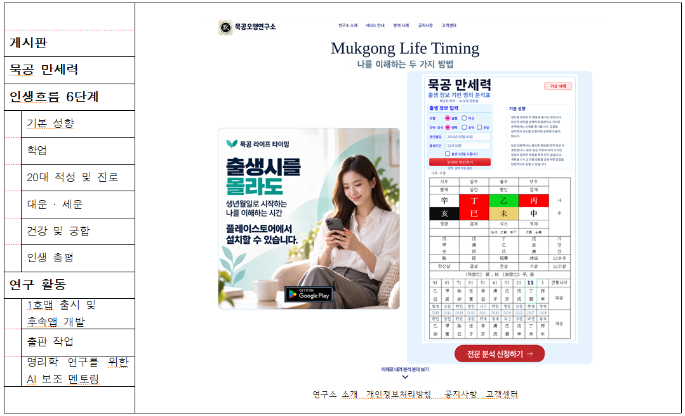

Mukgong Life Timing
생년월일로 시작하는 나를 이해하는 시간

공지사항
전체 보기묵공 Life Timing · 1호 앱
생년월일로 시작하는
자기이해
출생시를 몰라도 자신의 기본 성향과
생활 리듬을 살펴볼 수 있습니다.
- 입력 정보
- 성별 · 양력 또는 음력 생년월일
- 살펴볼 내용
- 기본 성향과 생활 리듬
분석 안내·사례·접수
기본 성향부터 학업·진로, 대운·세운과 인생 총평까지,
묵공의 연구 체계에 따라 인생의 흐름을 살펴봅니다.
연구 활동
앱 개발, 출판 작업, 고전연구, 명리학 연구를 위한 AI 보조 멘토링을 소개합니다.
연구 활동 보기